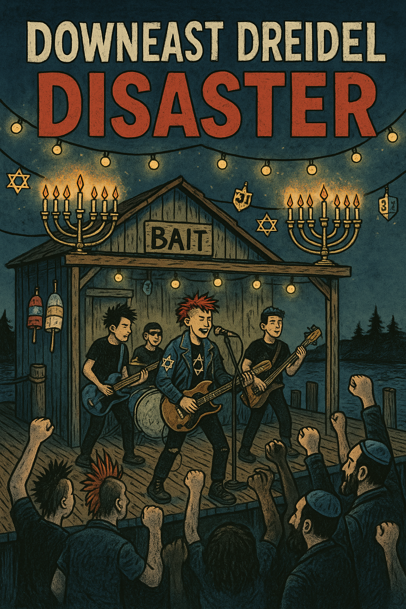

Long before the first downbeat or tambourine shake, the Shmutz family had settled on a forgotten web of logging roads deep in Maine’s North Woods. Their grandparents, Moishe and Gertie Shmutz, were back-to-the-landers before it was cool—or safe. After escaping a condo association in Brighton Beach, they homesteaded near the Piscataquis River, living off potato kugel, fiddleheads, and sheer Yiddish stubbornness.
The musical dynasty began unintentionally. The eldest sibling, Huxtable Maccabee Shmutz, was named for a beloved sitcom family. With a Stratocaster he rebuilt from junked snowmobile parts and a harmonica shaped like a shofar, Huxtable started writing songs about split wood, lost love, and cholent that wouldn’t quit.
In all seriousness, Brian Kresge, a musician/songwriter/rabbinical student got really tired of seasonal Jewish a capella music and decided anthemic punk rock and roots rock was the antidote. He recruited a range of good, Maine-based session musicians and recorded their Chanukah album, with more singles to follow.
CONTACT US